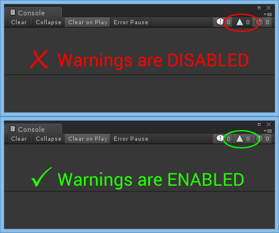
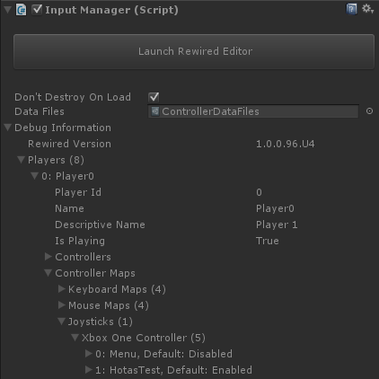
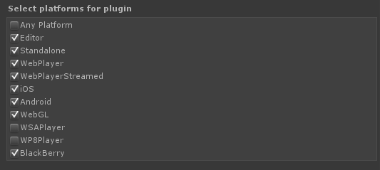
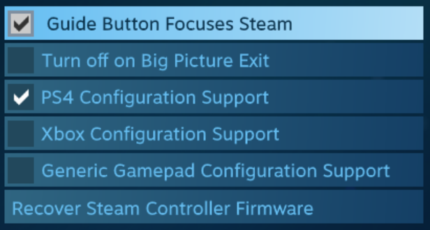

Troubleshooting
Topics:
General:
- Something isn't working...
- Debug Information: How to find the source of the problem
- My controller doesn't work
- Joystick control doesn't work
- Keyboard control doesn't work
- Mouse control doesn't work
- Something works in the editor but not in a Standalone build
- Two or more keyboard keys cannot be pressed at the same time
- Joystick count is always zero on Start() even when joysticks are connected
- Rewired is not initialized error
- Joystick axes don't work on Xbox One, PS4, Android, iOS, etc.
- Exception: "Message: Input Axis MouseAxis1 is not setup."
- Rewired works in the editor but not on Xbox One, PS4, Android, iOS, etc.
- Time comparisons to Time.time don't match
- OnGUI may return GetButtonDown/Up true for multiple frames
- When a keyboard key or D-Pad is pressed, GetAxis value ramps up/down slowly instead instantly returning 1/-1
- RewiredStandaloneInputModule issues
- High CPU usage in profiler when using Deep Profile
- Alpha, beta versions of Unity, experimental/preview features of Unity are not supported
Unity Editor:
- Error: The version of Rewired installed was not designed for Unity X. Please install Rewired for Unity X.
- Rewired does not install or has compiler errors immediately after installation
- Compiler errors with Rewired classes such as Rewired.Player
- Null reference exception when recompiling scripts in the editor at runtime
- Compile errors in PS4, XBox One, WiiU, or other special platforms
- Some component of Rewired is missing (RewiredStandloneInputModule, Control Mapper, etc.)
- "Data Files is missing" error
- Doing a clean reinstall of Rewired
Windows:
- Windows: XBox One controller doesn't work
- Windows: XBox 360 controller L/R triggers can't be pressed at the same time on Windows
- Windows, XInput: XInput-compatible device shows up as multiple controllers
- Windows, XInput: XInput-compatible device is always connected even after disconnecting the controller and no connect or disconnect events are sent
- Windows, XInput: Fallback handler could not load library C:/.../Mono/xinput1_4.dll
- Windows: Nintendo Switch Pro Controller doesn't work
- Windows 10 Universal: Serialization errors
OSX:
Android:
iOS:
tvOS:
- Game controllers not detected
- Joystick buttons activate keyboard keys on tvOS
- PlayerMouse software pointer does not work with Apple TV Siri Remote
Xbox One:
- XBox One: Crash/blank screen on start in game build
- XBox One: High CPU usage in profiler
- XBox One: Controller connect/disconnect events do not work
- XBox One: Controller appearing on console when connected to development PC
Playstation 4:
- PS4: Compiler error CS1061: 'LoggedInUser' does not contain a definition for 'aimHandle'
- PS4: Gamepad touchpad generates mouse input
Steam:
- Exceptions with Steamworks.Net plugin
- Steam Controller
- Steam Controller is not detected
- Steam Controller is appearing as a mouse or keyboard instead of a joystick
- Steam Streaming / Steam Link controller support
- Steam-configured controllers
- Steam (Windows): Using the Steam Controller and Steam-configured devices in the Unity Editor
- Steam (Windows): Sony DualShock 4, generic gamepad, or other joystick doesn't work or appears as two devices
- Steam (Linux/OSX): Some controllers appear as two controllers
- Steam: Flight sticks, racing wheels, and non-gamepad devices do not work
Something isn't working...
The single most common solution to a wide variety of support questions:
- Do you have warnings enabled in the Unity console?
Ensure warnings are enabled in the Unity console so you can see important messages created by Rewired for a variety of common situations. You should also have normal log messages and errors enabled. This can save a lot of time and back and forth questions.

Debug Information: How to find the source of the problem
You can easily determine why something is not working by looking at the Player, Joystick, Controller Map, and other objects in the Debug Information foldout in the Rewired Input Manager inspector. This shows a ton of useful information allowing you to visualize most objects in the system at runtime. For example, you can see if a Joystick has been assigned to a Player or view which Joystick Maps have been assigned and enabled.
IMPORTANT:
When viewing live information in the inspector such as Joystick button/axis values, you must click back into the Game window first or input values will not be updated. Input values are only updated when the Game window has focus in the Unity editor.
Prefab Method:
For game builds where you do not have access to the inspector, you can use the prefab in Assets/Rewired/DevTools/DebugInformation. Drag this prefab into your scene and build. It will display on screen the same information shown in the Debug Information foldout in the inspector. You can use the mouse or the touch screen to unfold the various items to find the information you want.
Scripting Method:
You can also get this information by using a little bit of debug code. This code will show all Joysticks assigned to each Player and all mappings in each Controller Map. You will be able to tell if a Joystick is assigned to a particular Player, if any Controller Maps were loaded for that Joystick, whether or not those Controller Maps are enabled, and the what Action is bound to each element. There are many more members in each of the Player, Joystick, JoystickMap, and ActionElementMap classes that you can get useful information from.
// Log assigned Joystick information for all joysticks regardless of whether or not they've been assigned Debug.Log("Rewired found " + ReInput.controllers.joystickCount + " joysticks attached."); for(int i = 0; i < ReInput.controllers.joystickCount; i++) { Joystick j = ReInput.controllers.Joysticks[i]; Debug.Log( "[" + i + "] Joystick: " + j.name + "\n" + "Hardware Name: " + j.hardwareName + "\n" + "Is Recognized: " + (j.hardwareTypeGuid != System.Guid.Empty ? "Yes" : "No") + "\n" +
"Is Assigned: " + (ReInput.controllers.IsControllerAssigned(j.type, j) ? "Yes" : "No") ); } // Log assigned Joystick information for each Player foreach(var p in ReInput.players.Players) { Debug.Log("PlayerId = " + p.id + " is assigned " + p.controllers.joystickCount + " joysticks."); // Log information for each Joystick assigned to this Player foreach(var j in p.controllers.Joysticks) { Debug.Log( "Joystick: " + j.name + "\n" + "Is Recognized: " + (j.hardwareTypeGuid != System.Guid.Empty ? "Yes" : "No") ); // Log information for each Controller Map for this Joystick foreach(var map in p.controllers.maps.GetMaps(j.type, j.id)) { Debug.Log("Controller Map:\n" +
"Category = " +
ReInput.mapping.GetMapCategory(map.categoryId).name + "\n" +
"Layout = " +
ReInput.mapping.GetJoystickLayout(map.layoutId).name + "\n" +
"enabled = " + map.enabled
); foreach(var aem in map.GetElementMaps()) { var action = ReInput.mapping.GetAction(aem.actionId); if(action == null) continue; // invalid Action Debug.Log("Action \"" + action.name + "\" is bound to \"" + aem.elementIdentifierName + "\"" ); } } } }
Using Debug Information to diagnose input problems:
There are 4 things that go into determining value of an Action in Player:
- The Controller(s) assigned to the Player.
- The Controller Map(s) that binds Controller elements to Actions.
- If the Controller is a Joystick, the Calibration Map for that Joystick.
- The Input Behavior assigned to the Action.
To determine why controller input is not working, go through the steps:
- Is the Controller appearing to Rewired?
Debug Information -> Controllers ->[Controller Type] -> [The Controller]
- Is the Controller enabled?
Debug Information -> Controllers -> [Controller Type] -> [The Controller] -> Enabled
- Is the controller assigned to the Player?
For Joysticks:
Debug Information -> Players -> [Player #] -> Controllers -> Joysticks -> [The Joystick]For Mouse:
Debug Information -> Players -> [Player #] -> Controllers -> Has Mouse
For Keyboard:
Debug Information -> Players -> [Player #] -> Controllers -> Has KeyboardFor Custom Controllers:
Debug Information -> Players -> [Player #] -> Controllers -> Custom Controllers -> [The Custom Controller] - Are there any applicable Controller Maps loaded in the Player for that Controller?
Debug Information -> Players -> [Player #] -> Controller Maps -> [Controller Type] -> [The Controller] -> [The Map]
- Is the Controller Map enabled?
- Does that Controller Map map the Actions which you are querying for values?
Debug Information -> Players -> [Player #] -> Controller Maps -> [Controller Type] -> [The Controller] -> [The Map] -> [The Binding]
- Is the ActionElementMap enabled?
- Check the live values returned by the Action.
- Check that the Controller elements are actually returning some value.
Debug Information -> Controllers -> [Controller Type] -> [The Controller] -> Axes
Debug Information -> Controllers -> [Controller Type] -> [The Controller] -> Buttons
With the fields open, click back into the game window and start using the joystick. Do the values in the inspector change for those axes? Do the values look to be the correct values? -1 to +1 for an axis. Are any axes returning non-zero value when you're not expecting them to? - For Joysticks, if the values returned are odd, for example an axis is only returning a range from 0.5 to 1, move on to check the Calibration Map.
Debug Information -> Controllers -> Joysticks -> The Joystick -> Calibration Map -> Axis Calibrations (one for each axis)
Check: Calibrated Max, Calibrated Min, Calibrated Zero, Dead Zone, Invert, Sensitivity Type, Sensitivity - Check the Input Behavior settings for the Action in question.
Debug Information -> Players -> [Player #] -> Input Behaviors -> [The Input Behavior]
Debug Information -> Players -> [Player #] -> Controller Maps -> [Controller Type] -> [The Controller] -> [The Map] -> Enabled
Debug Information -> Players -> [Player #] -> Controller Maps ->[Controller Type] -> [The Controller] -> [The Map] -> [The Binding] -> Enabled
Debug Information -> Players -> [Player #] -> Actions -> [Action Category] -> [Action]
If in the Unity editor, Click back into the game window before testing, otherwise input may be ignored because the game window is out of focus.
There is much more data available in Debug Information to help you debug and diagnose problems. Explore the tool to find the information you need.
My controller doesn't work
If you're using a controller that is not listed here, your controller doesn't have a hardware definition and will not automatically be recognized and mapped. Instead, it will use the Unknown Controller map and need to be manually mapped by the user prior to use through a custom control remapping screen. Please read about the Unknown Controller map and how unrecognized controllers are handled to understand why.
My gamepad doesn't work. I created a map using the Gamepad Template but it doesn't work.
Just because a controller is a gamepad does not mean Rewired will recognize it as a gamepad. Just what a "gamepad" is varies from product to product. There is no universal definition of a gamepad and the device itself does not provide any kind of element layout information. The Gamepad Template only applies to controllers that have had definitions created for them and have been specifically assigned and configured for that template. If you want to use a gamepad that is not listed here, you either have to make a controller definition for it and add it to the Gamepad Template or provide your users with a control remapping screen so they can map the controls themselves.
More reasons why your controller may appear not to work:
- You have multiple controllers connected, one Player, and have left the default Joystick Auto-Assignment Settings in the Rewired input manager: Based on the default settings, Rewired will assign only one controller per-Player. If multiple controllers are present, only one will be assigned to each Player. If you only have one Player, the second controller will be left unassigned. In order to allow auto-assignment of multiple Joysticks to the same Player, Max Joysticks Per Player must be raised to a value greater than 1. See this page for information on Controllers.
How to figure out why it's not working:
Use the Debug Information tool to see exactly what is happening in real-time. When “joystick input doesn’t work” in Rewired, this can mean many different things. All of this information is visible in the Debug Information tool:
- Is the Joystick appearing to Rewired?
- Debug Information -> Controllers -> Joysticks -> [The Joystick]
- Is the Joystick recognized?
- Debug Information -> Controllers -> Joysticks -> [The Joystick] -> Is Recognized
- Is the Joystick assigned to the Player?
- Debug Information -> Players -> [Player #] -> Controllers -> Joysticks -> [The Joystick]
- Are there any applicable Joystick Maps loaded in the Player for that Joystick?
- Debug Information -> Players -> [Player #] -> Controller Maps -> Joysticks -> [The Joystick] -> [The Map]
- Does that Joystick Map map the Actions which you are querying for values?
- Debug Information -> Players -> [Player #] -> Controller Maps -> Joysticks -> [The Joystick] -> [The Map] -> [The Binding]
- Is the Joystick enabled? (Would only get disabled if you manually disabled it in scripting.)
- Debug Information -> Controllers -> Joysticks -> [The Joystick] -> Enabled
- Is the Joystick Map enabled? (Would only get disabled if you manually disabled it in scripting.)
- Debug Information -> Players -> [Player #] -> Controller Maps -> Joysticks -> [The Joystick] -> [The Map] -> Enabled
- Is the ActionElementMap enabled? (Would only get disabled if you manually disabled it in scripting.)
- Debug Information -> Players -> [Player #] -> Controller Maps -> Joysticks -> [The Joystick] -> [The Map] -> [The Binding] -> Enabled
Joystick control doesn't work
- Did you create one or more Players in the Rewired input manager?
- Is Auto-assign Joysticks enabled in the Rewired Input Manager Settings page or have you manually assigned joysticks to the Player(s) during runtime through scripting? (See "My Controller Doesn't Work" also.)
- Did you create any Joystick Maps compatible with the controller(s) you're using?
- Did you assign those Joystick Maps to your Player(s) on start?
- Are those Joystick Maps enabled on start in the Player(s)?
- Is the joystick you're using a recognized controller? If not, please read about the Unknown Controller map and how unrecognized controllers are handled.
- Please go through the Quick Start guide and ensure you haven't missed any steps.
- Read the documentation to learn more about how Controllers and Controller Maps work.
- See My Controller Doesn't Work for more information and tips on how to find the source of the problem.
Keyboard control doesn't work
- Did you create one or more Players in the Rewired input manager?
- Did you create any Keyboard Maps?
- Did you assign those Keyboard Maps to your Player(s) on start?
- Are those Keyboard Maps enabled on start in the Player(s)?
- Did you check "Assign Keyboard on Start" in the Player(s) you want to have access to the keyboard or assign the keyboard manually to the Player(s) during runtime through scripting?
- Please go through the Quick Start guide and ensure you haven't missed any steps.
- Read the documentation to learn more about how Controllers and Controller Maps work.
- Use the Debug Information tool to determine why it isn't working.
Mouse control doesn't work
- Did you create one or more Players in the Rewired input manager?
- Did you create any Mouse Maps?
- Did you assign those Mouse Maps to your Player(s) on start?
- Are those Mouse Maps enabled on start in the Player(s)?
- Did you check "Assign Mouse on Start" in the Player(s) you want to have access to the mouse or assign the mouse manually to the Player(s) during runtime through scripting?
- Please go through the Quick Start guide and ensure you haven't missed any steps.
- Read the documentation to learn more about how Controllers and Controller Maps work.
- Use the Debug Information tool to determine why it isn't working.
Something works in the editor but not in a Standalone build
Differences in the editor and builds are almost always caused by one of two
possible issues:
1. Controller Mappings are incorrect. You are saving XML data (using Control Mapper or some other system) and
your saved data has different mappings. Clear your user save data to reset the mappings:
UserDataStore logs a message in the editor every time XML data is loaded
specifically for the purpose of reminding you of this possibility.
You can view Controller Maps live in both the editor and in builds to see
exactly what configuration is loaded.
2. When you create the build, the scene you are building is not the same
scene you are testing in the editor. The Rewired Input Manager prefab in the
build scene has different data saved in it compared to the Rewired Input
Manager in the scene you are testing in the editor, so you see differences.
Select the prefab in one of the two scenes (the one with the incorrect data)
and press "Revert" at the top of the inspector to revert it to the prefab
parent settings. If this doesn't work, go to the prefab with the correct
data and press "Apply" at the top of the inspector to commit its data to the
prefab parent.
Two or more keyboard keys cannot be pressed at the same time
If you find that no input value is returned when two or more keyboard keys are pressed at the same time, you are experiencing a hardware limitation of your particular keyboard called key jamming. This can affect any type of computer that uses a keyboard. This is not an issue with Rewired and there is no possible way to work around this issue in software because no signal is being sent from the keyboard.
Joystick count is zero on Start() even when joysticks are connected
Please see How To's - Receiving Joystick connect and disconnect events for important information.
Rewired is not initialized error
If you see the following error at runtime in the log:
"Rewired is not initialized. Do you have a Rewired Input Manager in the scene and enabled?"
There are only 3 reasons you could get this error:
- There is no enabled Rewired Input Manager in the scene.
- You canceled the installation process when Rewired tried to install itself and the Script Execution Order was not set causing Rewired to run after your other scripts and therefore it cannot initialize before you try to call it.
- The Script Execution Order that Rewired sets during installation was changed or removed by some other asset that was installed. This can happen with assets that contain an entire project. These assets will warn you before installation that they will overwrite the entire project.
The solution to #1 is to add a Rewired Input Manager to the scene.
The solution to #2 and #3 is to re-run the Rewired installation script by going to the menu:
- Window -> Rewired -> Setup -> Run Installer
Proceed with the installation and Rewired will set its Script Execution Order.
Joystick axes don't work on Xbox One, PS4, Android, iOS, etc.
Please see the following topic.
Exception: "Message: Input Axis MouseAxis1 is not setup."
Rewired was not installed properly (canceled during installation) preventing it from installing the Unity Input Manager entries necessary for supporting input on Unity fallback platforms and for getting mouse input when Native Mouse Handling is unavailable or disabled. Another possible cause is that these entries were deleted by some other asset installed after Rewired. This can happen with assets that contain an entire project. These assets will warn you before installation that they will overwrite the entire project. It can also happen if the asset contains its own Input Manager settings and overwrites the file instead of adding entries to it.
The solution is to re-run the Rewired installation script by going to the menu:
- Window -> Rewired -> Setup -> Run Installer
Proceed with the installation and Rewired will add the necessary Input Manager entries.
Rewired works in the editor but not on Xbox One, PS4, Android, iOS, etc.
If Rewired works in the editor but not on certain platforms, check the log file. The logs will tell you if Rewired was unable to initialize or any other errors that may have occurred.
The most common reason for this issue is that Rewired was not installed properly (canceled during installation) preventing it from installing the Unity Input Manager entries necessary for supporting input on Unity fallback platforms. Another possible cause is that these entries were deleted by some other asset installed after Rewired. This can happen with assets that contain an entire project. These assets will warn you before installation that they will overwrite the entire project. It can also happen if the asset contains its own Input Manager settings and overwrites the file instead of adding entries to it.
The solution is to re-run the Rewired installation script by going to the menu:
- Window -> Rewired -> Setup -> Run Installer
Proceed with the installation and Rewired will add the necessary Input Manager entries.
Time comparisons to Time.time don't match
When doing time comparisons to the current time from methods such as Controller.GetLastTimeActive(), you must compare current time based on ReInput.time.unscaledTime, not Time.time or Time.unscaledTime as Rewired always uses its own unscaled time calculation for all input for better accuracy in the various update loops. Do not compare against Time.unscaledTime as this is not always in perfect sync with Rewired's unscaled time.
OnGUI may return GetButtonDown/Up true for multiple frames
Due to the unpredictable order of OnGUI Repaint updates even with Script Execution Order set, Rewired has no way of being guaranteed to run first OnGUI Repaint events. Therefore, it is impossible to guarantee the input system will be able to update itself in the Repaint event before another script with an OnGUI call updates. Input may not yet be updated in the frame in which you are calling GetButtonDown from an OnGUI Repaint event and you may get the last frame's value (the value generated in the Layout event) for GetButtonDown. The end result is you may receive GetButtonDown or GetButtonUp multiple times in a row -- once in the Layout event and again in the Repaint event. In order to avoid this issue, only check for input in the Layout event as shown in the following example:
void OnGUI() {
if(Event.current.type == EventType.Layout) {
if(player.GetButtonDown("MyAction")) {
// do something
}
}
}
When a keyboard key or D-Pad is pressed, GetAxis value ramps up/down slowly instead instantly returning 1/-1
You have left the default Input Behavior Digital Axis settings. Please read the documentaion on Input Behaviors.
Digital Axis Settings:
These settings allow buttons and keyboard keys to be treated like axes and return values ranging from -1 to 1 instead of just True and False as is the usual case. This allows you, for instance, to have smooth character movement when using the keyboard for movement controls. The GetAxis value of the Action can be smoothed over time based on the Digital Axis Settings (gravity and sensitivity). See Rewired Editor - Input Behaviors for more information about each setting.
The default values have been set to mimic Unity's default Gravity and Sensitivity settings.
To get an instant on/off value for a keyboard key, do one of the following:
- Disable Digital Axis Simulation in the Action's Input Behavior.
- Use player.GetButton and player.GetNegativeButton instead of GetAxis when getting the value of the Action.
- Use player.GetAxisRaw instead of GetAxis when getting the value of the Action.
RewiredStandaloneInputModule issues
Please see Rewired Standalone Input Module - Troubleshooting.
High CPU usage in profiler when using Deep Profile
Deep Profile is notoriously inaccurate when dealing with deep levels of nested method calls because it uses reflection to get method names and such. Profile your game with Deep Profile disabled and you will see a massive increase in speed.
Alpha, beta versions of Unity, experimental/preview features of Unity are not supported
Rewired does not support any alpha or beta versions of Unity or any experimental or preview features in any version of Unity. Rewired may or may not work with these versions and/or features enabled and no explicit support for them will be added.
Every major release of Unity requires a branch of Rewired built specifically for that branch. When a new major version of Unity is in alpha or beta state, there will be no version of Rewired available for this major version of Unity. Once the final version is released by Unity, a new branch of Rewired will be released for download on the Unity Asset Store.
Guavaman Enterprises does not provide support for pre-release versions of Unity or unfinalized features.
Unity Editor
Error: The version of Rewired installed was not designed for Unity X. Please install Rewired for Unity X.
The error indicates you have installed a version of Rewired incompatible with the version of Unity you are using. You must install the correct version of Rewired from the Unity Asset Store.
The Unity Asset Store will automatically download the correct branch for the version of Unity you are using when downloading an asset. However, it does have bugs. If you have downloaded Rewired in a newer or older major version of the Unity editor, that version of the file will be cached in the Asset Store download location. The exact same download location is used for all versions of Unity from 5.0 onward, so when you switch to a different major version of Unity, the Unity Asset Store installer will install a copy of Rewired which was downloaded for a different version of Unity. The only solution is to delete the cached download and re-download it in Unity editor. See the Unity Manual for location of the Asset Store files.
Rewired does not install or has compiler errors immediately after installation
A very common error users make is to install a version of Rewired built for a newer major version of Unity in an older version of Unity. This happens because of Unity’s very poor choice to save Asset Store downloads from the Unity 5, 2017, and 2018 branches of Unity in the exact same folder in %appdata%\Unity\Asset Store-5x (on Windows). If you download the Unity 2018 version of Rewired from the Asset Store in Unity 2018, then go back to Unity 2017 and press Install without downloading Rewired again, Unity will install the 2017 version of Rewired which contains asset files that were saved in Unity 2018 and are therefore incompatible with 2017. Download Rewired again from the Unity Asset Store in Unity 2017 before installing Rewired and you won’t have any issues.
You will get the following compiler error if you install Rewired for Unity 2018 in Unity 2017:
Assets/Rewired/Internal/Scripts/Misc/ExternalTools.cs
(80,18): error CS0535: `Rewired.Utils.ExternalTools' does not
implement interface member 'Rewired.Utils.Interfaces.IExternalTools.PS4Input_GetSpecialControllerInformation
(int, int, object )'`
Compiler errors with Rewired classes such as Rewired.Player
It is sometimes possible to have class names in your project that may clash with Rewired classes such as Rewired.Player. If you have a global Player class declared in your project, the compiler will prefer that globally-declared Player over the Rewired.Player even with the "using Rewired;" statement placed at the top of your script. (A globally-declared class is a class declared outside of any namespace.)
If you receive a compiler error such as the following, you have a globally-declared class, interface, struct, or enum that clashes with a Rewired class name:
Assets/Scripts/MyScript.cs(16,9): error CS0029: Cannot implicitly convert type `Rewired.Player' to `Player'
In general, it is very bad practice to have any classes declared globally. Unfortunately, the vast majority of Unity users, including many who sell assets on the Unity Asset Store, do not use namespaces. Therefore, there is a high probability of class name clashes. If you do not know what namespaces are, read about them on MSDN here.
In these cases, if you have a class that clashes with a Rewired class, it is best to use the fully-qualified name of the Rewired class in your script such as Rewired.Player instead of just Player.
This example shows how to explicitly declare the Rewired.Player class to avoid clashes:
using UnityEngine;
using Rewired;
public class MyClass {
public Rewired.Player rewiredPlayer; // explicit declaration of the fully-qualified class name to avoid clashes with global Player classes.
}
You can also move the "using Rewired;" statment from the top of your script to inside your namespace declaration (provided you are using a namespace for your class) like this:
using UnityEngine;
namespace MyNamespace {
using Rewired; // this declaration will make Rewired classes take precedence over any global classes of the same name
public class MyClass {
public Player rewiredPlayer; // no more clash because Rewired.Player is higher priority than ::Player (global)
}
}
You can also make a single class take precedence over any global class with the same name like this:
using UnityEngine; using Rewired; using Player = Rewired.Player; // this declaration will make Rewired.Player take precedence over a global Player class public class MyClass { public Player rewiredPlayer; // no more clash because Rewired.Player is higher priority than ::Player (global) }
Null reference exception when recompiling scripts in the editor at runtime
NOTE: This information only applies to runtime recompiling in the editor while in Play mode. If you don't need this functionality, you do not need to do any of the following.
Null reference exceptions thrown during a recompile are a result of a script not checking if Rewired is ready before attempting to access properties or methods of the ReInput class.
If your workflow requires that you edit scripts during runtime, you should be aware that once recompile is triggered, the main Rewired managing class is destroyed and recreated. All Player, Controller, and other references are no longer valid. Due to the sheer complexity of Rewired (native input for example), runtime data is not serialized and therefore seamless resuming from a runtime recompile is not supported (see below for details). To prevent your scripts from throwing null reference exceptions when you recompile during runtime, you should be checking ReInput.isReady to determine if the system is initialized at the beginning of your input update.
Code patterns that survive runtime recompiles:
Pattern 1: Get Rewired Player every update
using UnityEngine;
using Rewired;
public class RecompileTest : MonoBehaviour {
void Update () {
if(!ReInput.isReady) return; // check if Rewired is ready (if false, editor is compiling)
// Do input processing
Player p = ReInput.players.GetPlayer(0); // get the Player object every update
Debug.Log(p.GetButton("Fire"));
}
}
- By checking ReInput.isReady at the beginning of the update and exiting if it's not ready, you avoid null references while Unity is recompiling.
- Never make any calls to any Rewired classes while the editor is recompiling (ReInput.isReady == false).
- By getting the Player every update and not storing it, you don't have to worry about it going out of scope after a recompile.
Pattern 2: Caching Rewired Player
This pattern allows you to cache your Player object on Awake and not have to get the Player each update. However, when recompiling, you must get a new reference to the Player object after compiling is finished because the original object is no longer valid.
public int playerId = 0;
private Rewired.Player player;
private bool isRecompiling;
void Awake() {
CacheRewiredPlayer();
}
void Update() {
GetInput();
}
void GetInput() {
#if UNITY_EDITOR
if(IsCompiling()) return; // exit during recompile
#endif
float value = player.GetAxis("MyAxis");
}
bool IsCompiling() {
if(!ReInput.isReady) {
isRecompiling = true;
return true;
} else if(isRecompiling) {
isRecompiling = false; // just finished recompiling
CacheRewiredPlayer(); // get the new Player object after recompile
}
return false;
}
void CacheRewiredPlayer() {
// Store the Player object
player = ReInput.players.GetPlayer(playerId);
}
The #if UNITY_EDITOR preprocessor directive was added because there is no need to check for recompiling in a build since this isn't possible.
Compile errors on PS4, XBox One, WiiU, or other special platforms
Assets/Rewired/Internal/Scripts/InputManager.cs(5,15): error CS0234: The type or namespace name `Utils' does not exist in the namespace `Rewired'. Are you missing an assembly reference?Assets/Rewired/Internal/Scripts/InputManager.cs(6,15): error CS0234: The type or namespace name `Platforms' does not exist in the namespace `Rewired'. Are you missing an assembly reference?
Both Utils and Platforms are namespaces in Rewired_Core.dll.
Unity added the ability to designate what platforms DLLs compile to in Unity 5 by setting check boxes on the DLL in the inspector for each platform. Rewired_Core.dll comes with all options checked except Windows App Store. Special versions of Unity add checkboxes for that specific platform (PS4 for example). That special platform check box is not and cannot be automatically checked by Rewired because it is built on a standard Unity build that does not contain these special platforms.
To fix this, simply click on Rewired/Internal/Libraries/Runtime/Rewired_Core.dll and check the appropriate platform checkbox in the inspector.

Some component of Rewired is missing (RewiredStandloneInputModule, Control Mapper, etc.)
If a component of Rewired is missing from the installation:
- Check to make sure you have the latest version of Rewired installed. Go to the menu:
Window -> Rewired -> Help -> About - Make sure the version of Unity you are using is compatible with that component. For example, to use the RewiredStandaloneInputModule or Control Mapper, you must be using Unity 4.6+.
- If neither 1 or 2 apply, then the file may have been deleted or not allowed to install. Make sure Rewired is in the root project Assets/ folder first, then re-run the installer script from the menu:
- Window -> Rewired -> Setup -> Run Installer
And allow the installer to install. This will not destroy any of your input configuration data which is stored in the Rewired Input Manager game object, not in the Rewired project folder. - If the files are still missing, delete and reinstall Rewired from the Unity Asset Store. First, delete the entire Rewired folder from the project. This will not destroy any of your input configuration data which is stored in the Rewired Input Manager game object, not in the Rewired project folder. Then re-install Rewired from the Unity Asset Store.
Important: After deleting the Rewired folder DO NOT save your scene or project until after you have re-installed Rewired. If you save your scene or project while Rewired is deleted, serialzed data on gameobjects in your scene may be erased by Unity because the Rewired classes no longer exist. Once Rewired is re-installed, it should be safe to save your scene, but it would be safer to quit and restart Unity before doing so.
"Data Files is missing" error
This can happen for two reasons:
- The Data Files field in the Rewired Input Manager inspector is blank.
- Serialization errors in some versions of Unity after upgrading Rewired or importing a ControllerDataFiles that replaces the original while the Unity Editor is open.
If #1, link the Data Files field to the ControllerDataFiles included with Rewired at Assets/Rewired/Internal/Data/Controllers/ControllerDataFiles.
If #2, close the Unity Editor and re-launch it.
Doing a clean reinstall of Rewired
How to do a clean reinstall of Rewired:
- Close the Unity editor if it is open.
- Open the Unity editor.
- Delete the Rewired folder.
- Close the Unity editor without saving if asked.
- Open the Unity editor.
- Install Rewired from the Unity Asset Store.
- Close the Unity editor without saving if asked.
- Open the Unity editor.
- Test.
Windows
Windows: XBox One controller doesn't work
Most often this is caused by creating a Joystick Map specifically for the Xbox One controller when Use XInput is enabled instead of using the Gamepad Template. See Controller Maps - Special Considerations for XInput gamepads on Windows Standalone, Windows App Store, and Windows 10 Universal.
Windows: XBox 360 controller L/R triggers can't be pressed at the same time on Windows
This is a design issue with the Microsoft XBox 360 controller driver. The XBox 360 controller driver only returns a single byte of data for both the left and right triggers making it impossible to distinguish the two when both are pressed simultaneously when using Raw Input or Direct Input. You can read about this issue and the reasoning behind the design here.
The solution is to enable XInput in the Rewired Editor - Settings. XInput is able to treat the triggers as separate values.
Windows, XInput: XInput-compatible device shows up as multiple controllers
If Use XInput is enabled and you are seeing multiple XInput devices in Rewired when only one controller is plugged in:
If you are seeing multiple devices named "XInput Gamepad 1", "XInput Gamepad 2", etc:
Multiple XInput devices showing up can only be caused at the Windows driver
level. Rewired queries XInput.dll directly to get the list of connected
XInput devices 0-3. There is no intermediary step involved. Therefore, your
XInput device is showing up as 2 devices in XInput itself, not Rewired. This is almost always caused by a driver creating multiple devices. Check Windows Device manager for multiple XInput devices under HID and Xbox Peripherals and elsewhere. Uninstall one or all of these drivers, reboot, and try agiain. Another possible cause is if you have a 3rd party tool that
creates emulated XInput devices such as DS4Win, PS3 SCP driver, or
other tools that emulate XInput devices. Uninstall these tools/drivers and try again.
If you are seeing multiple devices, one named "XInput Gamepad 1" and one named something else like "Controller (XBOX One For Windows)":
This error can only happen if the XInput-compatible device does not conform to Microsoft's documented standards for how XInput devices identify themselves. If the device deviates from these standards, Rewired will be unable to filter out XInput devices when it populates its Raw Input or Direct Input device list. This causes it to create both a Raw Input / Direct Input device and an XInput device. The only way to fix these problem devices is to add special case code to manually filter them out individually. Report this device via the support form on the website and include all relevant controller information shown by the Rewired/DevTools/JoystickElementIdentifier tool. (Create a new scene, add the JoystickElementIdentifier tool to the scene at 0, 0, 0, add an empty Rewired Input Manager, and press Play.) To include a screenshot, please include a link to the image on a filesharing service such as Dropbox.
Windows, XInput: XInput-compatible device is always connected even after disconnecting the controller and no connect or disconnect events are sent
The most common cause is that you have a 3rd party tool that creates emulated XInput devices such as the PS3 SCP driver or other tools that emulate XInput devices. Uninstall these tools/drivers and try again. This issue occurs at the driver level and is not related to Rewired.
Windows, XInput: Fallback handler could not load library C:/.../Mono/xinput1_4.dll
When XInput is enabled, the build log file will always contain these on Windows XP, Vista, and 7, and possibly on Windows 8 depending on what version of XInput is installed on the system:
Fallback handler could not load library C:/.../Mono/xinput1_4.dll
Fallback handler could not load library C:/.../Mono/.\xinput1_4.dll
Fallback handler could not load library C:/.../Mono/xinput1_4.dll
Fallback handler could not load library C:/.../Mono/xinput1_4
Fallback handler could not load library C:/.../Mono/.\xinput1_4
Fallback handler could not load library C:/.../Mono/xinput1_4
Fallback handler could not load library C:/.../Mono/libxinput1_4.dll
Fallback handler could not load library C:/.../Mono/.\libxinput1_4.dll
Fallback handler could not load library C:/.../Mono/libxinput1_4.dll
Those log messages are completely harmless. Mono makes these log entries the first time you make an extern call to a DLL when it tries to find that DLL. It tries all permutations of a DLL’s name before giving up and throwing an exception if the DLL was not found. This is the only way to detect the presence of a DLL in C#.
Rewired works with all versions of XInput. Rewired will try to detect and use the best possible version of XInput installed on the user's system starting with XInput 1.4 and going backwards to the original release of XInput until it finds one it can use. The more versions it tries before it finds a suitable version, the more entries will be logged.
These log messages do not indicate any kind of problem with XInput. These log messages are logged by Mono, not Rewired, and cannot be silenced.
Windows: Nintendo Switch Pro Controller doesn't work
The Nintendo Switch Pro Controller cannot be used in Windows via USB. This is documented on the Supported Controllers page:
Supported Controllers - Nintendo Switch Pro Controller
The Nintendo Switch Pro Controller does not produce any input when connected via USB. This is not a limitation of Rewired. It is a limitation of the hardware and/or HID driver.
The only reason it works when using Steam with Pro Controller Configuration Support enabled is the Steam driver which converts it into an XInput device. Windows cannot see the axes or buttons on this device through Raw Input or Direct Input and it is not a native-XInput device, so it will not be handled by XInput without a special driver.
Windows 10 Universal: Serialization errors
If you get errors when building the UWP project in visual studio like the following:
InvalidCastException: Unable to cast object of type 'Rewired.Data.Mapping.HardwareJoystickMap' to type 'UnityEngine.IUnitySerializable'. at UnityEngine.Internal.Types.$UnityType4390.$Invoke0(Int64 instance, Int64* args) at UnityEngine.Internal.$MethodUtility.InvokeMethod(Int64 instance, Int64* args, IntPtr method) (Filename:Line: 0)
It is caused by the Rewired_Core.dll version being out of sync with the main Rewired_Core.dll used in the editor.
There are several things you can to do:
- Try reinstalling the Windows UWP libraries in the Unity editor as shown here.
- Clear all cached files in Visual Studio
- Make sure the version of Rewired_Core.dll copied to the Visual Studio project matches the version in Unity in the Rewired\Internal\Libraries\Runtime\UWP folder. (The one you would compare to depends on if you're using the .NET or IL2CPP scripting backend.)
OSX
OSX: XBox One Controller vibration doesn't work
In order for vibration to work on the Xbox One Controller on OSX, the input source must be set to Native and you must have this driver installed (at least v0.16).
OSX, Mac App Store: Joysticks don't work
To access USB or Bluetooth devices in the Mac App Store sandbox, your application must request specific entitlements.
Enable the follow entitlements for your application:
- com.apple.security.device.bluetooth
- com.apple.security.device.usb
See the Mac App Store entitlements documentation for more information.
Android
Joystick buttons activate keyboard keys on Android
Rewired uses Unity input as the input source in Android so it is subject to its limitations. Most Android joysticks return keyboard keycode values for certain buttons on the controller such as Left Shoulder (Left Shift), Right Shoulder (Right Shift), Back (ESC), Menu (Menu), etc. These keyboard values can be in additon to or instead of a joystick button value. This can be problematic if you've developed your game for both desktop PCs and Android and have keyboard maps already set up for the desktop and you want to use the same input scheme for an Android build. When you press one of these buttons, if it also has an Action assigned through a keyboard map, you may get 2 values returned -- one for the keyboard map and one for the joystick map.
An easy way to prevent this is to set ReInput.controllers.Keyboard.enabled = false to disable all keyboard input on Android. Special provision has been made for certain Android keycodes used by most joysticks such as Back and Menu so that these will still work when activated by a joystick. In addition to solving this issue, disabling keyboard input improves performance slightly. Note that on Android, even when disabling keyboard support certain keys will still function in order to still be able to support certain buttons on joysticks that return keyboard keycodes such as the Back button.
You can disable keyboard support per-platform on the Rewired Editor - Settings page or through scripting as shown below.
void Awake() {
#if UNITY_ANDROID && !UNITY_EDITOR
Rewired.ReInput.controllers.Keyboard.enabled = false; // Disable keyboard input on Android platform
#endif
}
iOS
iOS 13 Xbox, PS4 Controller Support
Apple will be adding support to iOS 13 for Xbox and Playstation 4 controllers.
- These controllers DO work already with no changes in Rewired.
- The controllers are treated as every other MFI controller because Apple has chosen to expose them as MFI controllers.
- Rewired has no explicit support for these controllers on iOS. It inherited support through the fact they chose to treat them as MFI controllers. There currently has been no update to Rewired to support these
controllers in any other way than as generic MFI controllers. - Extra buttons added in iOS 13 (stick buttons, options, menu) do not currently work because they are not currently supported by Unity.
- Controller.name can be used to identify which MFI controller this is so you can display device specific glyphs. Rewired cannot use the iOS 13 ProductCategory function. Rewired on iOS uses UnityEngine.Input for all input as shown here, so Apple API calls don't apply.
- You must make your Controller Map for the Gamepad Template or the iOS MFI Controller profiles. Controller Maps created for Xbox One Controller, Xbox 360 Controller, or DualShock 4 will not be used on iOS because, to Rewired, these controllers are all simply MFI controllers.
- IF I decide to change the current system implement these new controllers as separate controller definitions for the sole purpose of reporting button element names based on the specific device, that will be done in a future version and listed on the supported controllers page. There are also some very significant disadvantages to doing this including making user mappings no longer universal across MFI devices (when a user changes a mapping for a SteelSeries Nimbus MFI controller, then swaps out with a DS4 or Xbox One controller, it will not inherit those mappings made for the other MFI controller because they would now use different device profiles).
To determine device type to display device-specific glyphs:
Controller.name will return the following for these devices:
Xbox One: "Xbox Wireless Controller"
DualShock 4:
"DUALSHOCK 4 Wireless Controller"
Use that to display different graphics for the elements on the MFI controller.
IMPORTANT:
This behavior may change in a future version of Rewired to load different controller definitions for Xbox and PlayStation controllers requiring you to change the way glyphs are implemented.
Game controllers not detected
In Unity versions 5.3.0+, game controllers no longer work in Unity because the XCode project Unity builds does not automatically reference the required GameController framework.
Solution: Manually add a reference to the GameController or GameKit framework in XCode.
More details of this issue and the solution can be found here.
tvOS
Game controllers not detected
In Unity versions 5.3.0+, game controllers no longer work in Unity because the XCode project Unity builds does not automatically reference the required GameController framework.
Solution: Manually add a reference to the GameController or GameKit framework in XCode.
More details of this issue and the solution can be found here.
Joystick buttons activate keyboard keys on tvOS
Rewired uses Unity input as the input source in tvOS so it is subject to its limitations. tvOS joysticks return keyboard keycode values for certain buttons on the controller such as Left Shoulder, Right Shoulder, etc. These keyboard values are in additon to a joystick button value. This can be problematic if you've developed your game for both desktop PCs and tvOS and have keyboard maps already set up for the desktop and you want to use the same input scheme for a tvOS build. When you press one of these buttons, if it also has an Action assigned through a keyboard map, you may get 2 values returned -- one for the keyboard map and one for the joystick map.
An easy way to prevent this is to set ReInput.controllers.Keyboard.enabled = false to disable all keyboard input on tvOS. In addition to solving this issue, disabling keyboard input improves performance slightly.
You can disable keyboard support per-platform on the Rewired Editor - Settings page or through scripting as shown below.
void Awake() {
#if UNITY_TVOS && !UNITY_EDITOR
Rewired.ReInput.controllers.Keyboard.enabled = false; // Disable keyboard input on tvOS platform
#endif
}
PlayerMouse software pointer does not work with Apple TV Siri Remote
The Rewired Standalone Input Module works in the same was as the original Unity Standalone Input Module. Touch input takes precedence over mouse input, so if any touch input is detected, mouse input will not be processed.
The Apple TV Siri Remote generates touch input when you touch or swipe anywhere on the touchpad. If you have set up a PlayerMouse to allow you to move a software pointer with the Siri Remote's touchpad, you must disable touch support on the Rewired Standalone Input Module, otherwise the touch events will be processed and the PlayerMouse will not move when you interact with the remote's touchpad.
The Rewired Standalone Input Module's "Touch Supported" option must be disabled on TV OS for PlayerMouse to work properly with the Apple TV Siri Remote.
// Disable touch input on the RewiredStandaloneInputModule on tvOS if using PlayerMouse
#if UNITY_TVOS
(EventSystem.current.currentInputModule as Rewired.Integration.UnityUI.RewiredStandaloneInputModule).allowTouchInput = false;
#endif
Xbox One
XBox One: Crash/blank screen on start in game build
This is always due to improper setup of the required dependencies. See Special Platform Support - XBox One for details on setting up the required dependencies.
XBox One: High CPU usage in profiler
Debug builds on Xbox One show ridiculously high CPU usage from InputManager_Base.Update, sometimes as high as 28 ms. On Development builds the CPU usage is much, much lower.
Set Build Type to "Development Build" to avoid the huge debug overhead when profiling.
XBox One: Controller connect/disconnect events do not work
I receive reports every month or two about controller connection and disconnection events not working on the Xbox One platform. These events are driven directly by Unity's UnityEngine.XboxOneInput.OnGamepadStateChange event exposed by Unity which is nothing more than a wrapper for the SDK's event. For Rewired's events to not be fired means that Unity's events are not being fired (and perhaps the SDK's events below that.)
Every case of this issue has turned out to be something unrelated to the direct issue. For example, if an XInput-compatible controller is attached to the development PC, controller events may not fire on the console. Disconnect the controller from the PC and restart the console and events should start working again.
In addition, if you are not running a packaged build (push deploy, etc.), the events may not fire.
This is not a bug in Rewired causing this issue and there is no solution that can be implemented to fix it.
XBox One: Controller appearing on console when connected to development PC
If an XInput-compatible controller is attached to the development PC, the controller will be detected by the Xbox One console and used. This is not Rewired's doing and the behavior cannot be disabled. This is a feature of the Microsoft Xbox One SDK.
Playstation 4
PS4: Compiler error CS1061: 'LoggedInUser' does not contain a definition for 'aimHandle'
Error message:
Assets\Rewired\Internal\Scripts\Misc\ExternalTools.cs(348,21): error
CS1061: 'LoggedInUser' does not contain a definition for 'aimHandle'
and no accessible extension method 'aimHandle' accepting a first
argument of type 'LoggedInUser' could be found (are you missing a
using directive or an assembly reference?)
Cause:
You have Rewired for Unity 5 or Unity 2017 installed in Unity 2018. This is not supported.
Solution:
Install Rewired for Unity 2018.
Additional Information:
See this for information about downloading the correct version of Rewired from the Unity Asset Store.
PS4: Gamepad touchpad generates mouse input
This is coming from Unity's input system. Rewired uses UnityEngine.Input and UnityEngine.PS4.PS4Input on the PS4
platform for all input (See Tested Platforms.) Rewired cannot disable this.
There's no confirmed way to disable this functionality in Unity. The only possible method that might work is setting UnityEngine.Input.simulateMouseWithTouches to false.
You can also easily disable Mouse input on the PS4 platform through Rewired so the mouse data coming form Unity isn't processed:
#if UNITY_PS4Or unassign the mouse from the Players.
ReInput.controllers.Mouse.enabled = false; #endif
Or disable the Player's Mouse Maps.
Steam
Note: All of this information is documentation on how Steam functions and has very little to do with Rewired. Rewired is treated as any other application by Steam and Rewired does not interface with its API in any way. Steam is responsible for making the Steam Controller appear to the application based on the settings you choose in Steam. This information has been included because so many people have problems with setting up things properly in Steam. All of this information has been figured out through trial and error. Frequent changes to Steam are likely to render some or all of this information invalid.
It is impractical for me to provide complete documentation on Steam or how to configure Steam. Steam is a separate system that I did not create and do not have control over. Complete Steam documentation is available in the Steamworks back end.
Exceptions with Steamworks.Net plugin
There have been several reports of exceptions being thrown during Rewired's initialization on Windows with the Steamworks.Net Unity plugin. Thus far, the only information I have is that Steamworks may be setting up a hook that intercepts all external calls and routes them through its callback dispatcher system. When Rewired tries to initialize Raw Input, Steamworks intercepts the call and throws an exception. This is an issue with Steamworks/Steam and not Rewired. Based on reports, it appears to only happen when Steamworks is initialized and certain methods are called before instantiating and initializing Rewired. (I have been unable to reproduce this issue myself thus far.)
There have also been reports of this issue happening when Steam is launched in Big Picture Mode and not in the normal mode.
Until I receive a reliable repro case where I can determine exactly what Steamworks is doing and find a workaround if one exists, the only solution is to always initialize Rewired first before Steamworks. This means you must have your Rewired Input Manager in your scene before your Steamworks manager is spawned and initialized and never destroy that Rewired Input Manager for the duration of runtime. (Don't Destroy on Load is checked by default on the Rewired Input Manager.)
To be on the safe side, make sure you avoid ever destroying or shutting down the Rewired system so it never has to do any setup after Steam has already been intialized. This also means you should never change input sources through ReInput.configuration in-game after Steam has been initialized because changing it causes Rewired to Reset. Also never call ReInput.Reset() which will also cause Rewired to do all its setup again.
There are many, many currently games on Steam that use Rewired with no issues whatsoever.
Steam Controller
All Platforms
Native Steam Controller support is not available at this time. Direct support of the controller's special features is not currently available. The Steam Controller can only be supported through Steam's automatic emulation of a standard controller (type varies by platform.)
Windows
The Steam Controller automatically emulates an XInput gampad (XBox 360) and a Direct Input gamepad on Windows and is supported as an XInput or Direct Input gamepad only at the present time. You must enable Use XInput in the Windows settings or use Direct Input as the Primary Input Source (not recommended) to support the Steam Controller, Steam Streaming, and Steam Link.
OSX
As of Rewired 1.1.7.9, the Steam Controller, Steam Link, and Steam Streaming work properly using the default Native input source. It is recommended that you leave the input source set to Native for the best device support.
Linux
The Steam Controller, Steam Link, and Steam Streaming all work properly using the default Native input source. It is recommended that you leave the input source set to Native for the best device support.
IMPORTANT NOTE
The Steam Controller is not a standard HID device and cannot be seen by the OS without Steam being initialized for your process through the Steam API with Steam running in the background. It is not possible to use the Steam Controller without Steam. Rewired does not initialize Steam for you -- you will have to do so using the Steam API or a C# Steam library such as Steamworks.net.
See Best Practices - Steam for recommended guidelines for Steam.
Steam Controller is not detected
Windows: (See this topic for information on each OS.)
The Steam Controller automatically emulates an XInput gampad (XBox 360) and a Direct Input gamepad on Windows and is supported as an XInput or Direct Input gamepad. You must have "Use XInput" enabled in the Rewired Input Manager - Settings page or use Direct Input as the Primary Input Source (not recommended) or else the Steam Controller will not be detected. (XInput can only be used in conjunction with Raw Input or Direct Input, not Unity Input. Further, Disable Native Input must not be checked.) In addition, Steam must be initialized through the Steam API before the Steam Controller can be detected as an XInput or Direct Input device.
See this for important information on using the Steam Controller in the Unity Editor on Windows.
See Best Practices - Steam for recommended guidelines for Steam.
Steam Controller is appearing as a mouse or keyboard instead of a joystick
Rewired has no awareness of Steam or the Steam Controller. It is treated by Steam as any other application and therefore uses the Steam Controller configuration profiles and rules you've set up in Steam for the application.
Steam can send any application data from the controller as if it's a mouse + keyboard or an XInput gamepad (on Windows for the sake of this example). The application does not have to have any awareness of the Steam Controller and will see mouse input and key strokes and/or XInput gamepad information depending on the settings you've set up in your game profile. Set your game profile up to use the default Gamepad configuration and it will be seen as an XInput controller by default. The user is free to change their Steam Controller configuration and make the controller function as a gamepad, mouse, keyboard, or combination of controller types.
Steam Controller profiles are set up in the Steamworks backend. Configuration of Steamworks is beyond the scope of the Rewired documentation. See the Steamworks documentation for information on how to set up the Steam Controller for your game.
Steam Streaming / Steam Link controller support
Steam Streaming and the Steam Link only work with XInput-compatible devices (XBox 360, XBox One, Logitech F310, etc.), Sony DualShock 4, and the Steam Controller. It is not possible to use Raw Input or Direct Input devices with Steam Streaming unless Steam has specifically added emulation support for this device. This is not a limitation of Rewired, it is a limitation of Steam.
Windows
Steam Streaming and Steam Link create a controller that emulates an XInput gampad (XBox 360) and a Direct Input gamepad on Windows and is supported as an XInput gamepad or Direct Input gamepad only at the present time. You must enable Use XInput in the Windows settings or use Direct Input as the Primary Input Source (not recommended) to support the Steam Controller, Steam Streaming, and Steam Link. Note: When using XInput devices with XInput enabled, Windows is limited to a maximum of 4 devices. This is a limitation of XInput, not Rewired. See this for information on supporting more than 4 XInput devices.
OSX
The Steam Controller, Steam Link, and Steam Streaming work using the default Native input source. It is recommended that you leave the input source set to Native for the best device support.
Linux
The Steam Controller, Steam Link, and Steam Streaming work properly using the default Native input source. It is recommended that you leave the input source set to Native for the best device support.
See Best Practices - Steam for recommended guidelines for Steam.
Steam-configured controllers
Steam has the ability to "configure" certain controllers and make them appear as a different device with custom bindings set through the Steam interface. This is done by enabling Configuration Support for various controller types in Steam Big Picture mode under Settings -> Controller or in the main Steam interface in the menu Steam -> Settings -> Controller -> General Controller Settings. Whetever controllers are allowed to be configured by Steam will appear as different devices to the application (exact details dependings on the platform.)

Windows:
Controllers that are configured by Steam will appear as XInput devices and Direct Input devices to the system. The real Raw Input device will be hidden by Steam from the application. This means that you must enable Use XInput in the Windows settings or use Direct Input as the Primary Input Source (not recommended) to support these devices.
OSX
The Steam Controller, Steam Link, and Steam Streaming work using the default Native input source. It is recommended that you leave the input source set to Native for the best device support.
Linux
The Steam Controller, Steam Link, and Steam Streaming work properly using the default Native input source. It is recommended that you leave the input source set to Native for the best device support.
Steam (Windows): Using the Steam Controller and Steam-configured devices in the Unity Editor
In terms of controller support, Steam treats the Unity Editor as a Desktop application, not a game. Steam has separate settings for Desktop applications and games in Steam's configuration options.
The settings for Steam-configured controllers (Steam Controller and any controller that is being configured by Steam based on the settings in Steam -> Settings -> Controller -> General Controller Settings) for Desktop applications can be found at:
Steam -> Settings -> Controller -> Desktop Configuration
By default, Desktop Configuration support is disabled, so no input will be possible through the Steam Controller or through XInput devices that are created by and controlled by Steam. (This includes Xbox controllers, PS4 controllers, etc. if they are configured for "Configuration Support" in Steam.)
It seems to be impossible to configure a Desktop application to use gamepad controls in the Steam interface. So in order to use non-keyboard/mouse based controls for these devices in the Unity Editor, you must make Steam treat the Unity Editor as a game and not a Desktop application. There are two different ways you can do this, each with it's own issues. You only need to do ONE of the following:
- Launch Unity Editor from Steam: Add your Unity.exe editor executable to Steam from Games -> Add a Non-Steam Game to My Library and launch the Unity Editor from within the Steam interface.
- Launch Steam from Command Line / Shortcut: Launch Steam using the following undocumented command line (you can also make a shortcut), changing YOUR_APP_ID to the Steam App Id of your game:
steam.exe -forcecontrollerappid YOUR_APP_ID
Noted differences in behavior:
Method 1 - Launch Unity Editor from Steam:
- Both XInput 1.3 and XInput 1.4 respect custom bindings for controllers configured by Steam.
Method 2 - Launch Steam from Command Line / Shortcut:
- Only XInput 1.4 respects custom bindings for controllers configured by Steam if Xinput 1.4 is present. XInput 1.3 still reports unmodified bindings. XInput 1.3 will also not detect a device such as the DS4 which is not a true XInput device, but is made to appear as one by Steam when configured. It is unknown why XInput 1.3 functions in a build along with 1.4 but not in the editor.
Steam (Windows): XInput devices do not work correctly or at all in the Unity Editor
See the following topics:
- Steam-configured Controllers
- Steam (Windows): Using the Steam Controller or Steam-configured XInput devices in the Unity Editor
Steam (Windows): Sony DualShock 4, generic gamepad, or other joystick doesn't work or appears as two devices
See this for duplicate controllers on OSX/Linux.
This can happen if the user has enabled PS4 Configuration Support or Generic Gamepad Configuration Support in Steam Big Picture mode under Settings -> Controller or in the main Steam interface in the menu Steam -> Settings -> Controller -> General Controller Settings. Disable PS4, Xbox, and Generic Gamepad Configuration Support to prevent Steam from modifying controller layouts or creating emulated XInput devices for these devices.
These settings conflict with the Rewired setting "Use Steam Raw Input Fix" which existed in Rewired versions below 1.0.0.112. The fix was removed because it no longer works due to changes to Steam. If you are experiencing this issue, update to the latest version of Rewired or disable the option in the Rewired Input Manager under Settings -> Windows -> "Use Steam Raw Input Fix."
Even without the old Raw Input fix enabled, some devices may not work at all when Generic Gamepad Configuration Support is enabled in Steam. This option causes Steam to try to create an emulated XInput device for the attached controller. Note that this setting applies to ALL controllers including flight sticks, etc., attached to the system, not just gamepads. This setting frequently makes controllers simply non-functional because Steam is unable to create a working emulated XInput device for it but it still blocks Raw/Direct Input from seeing the device. The result is Rewired sees a dead XInput device and the user gets no input.
Note that on Windows, Steam creates an emulated XInput device for all controllers for which Steam configuration support is enabled. Steam will then block access to and hide the Raw Input device when this option is enabled. Because of how Steam works, this means that your game must enable Use XInput or else your users will not be able to use these controllers when configured by Steam.
The above setting is up to the end-user to set properly in their own Steam configuration. The Steam developer back-end also has a setting entitled Steam Configurator for Third-Party Controllers which is a duplicate of the above settings, but overrides the end-user's settings for each option if enabled. Note that while this option overrides the end-user's settings if the setting is enabled forcing the option to be enabled even if the end-user disables it, it cannot override in the negative meaning if the end-user has the option enabled in their control panel, the developer setting cannot disable it.
Flight joysticks, racing wheels, and other devices will cease to function entirely if Generic Gamepad Configuration Support is enabled. Other devices may only partially work having certain elements like D-Pads that do not function. Allowing Steam to configure these controllers allows the user to remap their controls within Steam's interface. Allowing the user to remap their controls within Steam while also providing an in-game remapping system will lead to incorrect element identification in-game as the user may have rebound the A button to the Y button for example and there is no way for Rewired to know this. For any of the following reasons, it is recommended you disable support for Steam configuration of controllers in the Steam back-end and inform your users to disable this option in the Steam Big Picture controller configuration settings:
- If your game needs to support more than just gamepads.
- If your game needs to support more than 4 players at once. (XInput is limited to 4 controllers and if Steam is allowed to force gamepads to be XInput devices, there will be a hard limit of 4 controllers.)
- If you provide a means of remapping controls in-game so there aren't two competing remapping systems.
- If you want to support all the recognized gamepads or other devices Rewired supports. When Steam takes over and turns devices into XInput devices, Rewired cannot see these devices anymore as HID devices and instead just sees XInput devices. In current testing, there are a number of devices that Steam either does not support (meaning a dead XInput device) or supports improperly (has certain broken elements).
Note that even with Steam controller configuration disabled, Steam Streaming and Steam Link will still work properly provided you have enabled support for XInput.
See Best Practices - Steam for recommended guidelines for Steam.
Steam (OSX/Linux): Some controllers appear as two controllers
Prior to Rewired 1.1.8.0, some controllers may appear as two controllers on OSX and Linux when using Steam. This is due to the fact that Steam creates an additional device for each controller that it recognizes and is allowed to configure. This includes Xbox controllers, Sony DualShock 4, and potentially all gamepads depending on the user's settings in Steam for controller configuration and the game's default Steam developer back-end settings for the Steam Configurator for 3rd party controllers. If a controller is allowed to be configured by Steam, it will create a new device emulating an Xbox controller. Steam does not hide or disable the original controller so Rewired sees both controllers and both will provide input. It is possible to prevent Steam from creating the emulated Xbox controller by disabling Xbox, PS4, and Generic Gamepad Configuration Support in the Steam developer back-end. However, if the user has enabled Steam controller configuration in their local settings, the developer back-end default settings cannot disable it.
Note that even with Steam controller configuration disabled, Steam Streaming and Steam Link will still work properly provided you are using the correct input source for the platform in question.
These duplicate devices are automatically filtered out in Rewired 1.1.8.0+. Specifically, the HID device is filtered out and the emulated Steam Controller device is used instead.
See Best Practices - Steam for recommended guidelines for Steam.
Steam: Flight sticks, racing wheels, and non-gamepad devices do not work
This can happen if the user has enabled Generic Gamepad Configuration Support in Steam Big Picture mode under Settings -> Controller or in the main Steam interface in the menu Steam -> Settings -> Controller -> General Controller Settings.
When Generic Gamepad Configuration Support is enabled, all devices regardless of type will be handled by Steam and converted to emulated Steam Controller devices. If Steam has support for a particular device, it will work as an emulated Steam Controller. However, if Steam does not support the device, the device will simply not appear to the game. Flight sticks, racing wheels, and other device types, and even many gamepads do not work at all when Generic Gamepad Configuration Support is enabled.
Disable Generic Gamepad Configuration Support to prevent Steam from modifying controller layouts or creating emulated Steam Controllers for these devices.
This is an issue with Steam and cannot be controlled, modified, or corrected by Rewired.